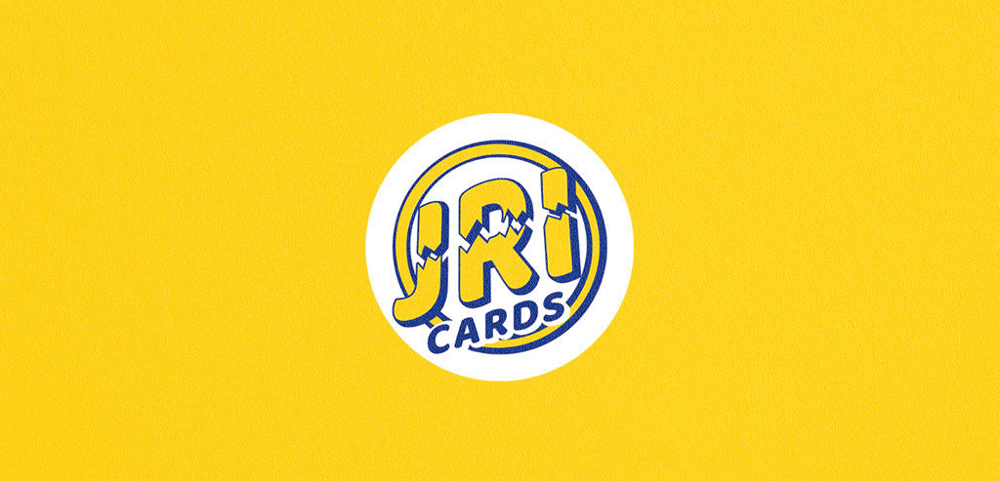
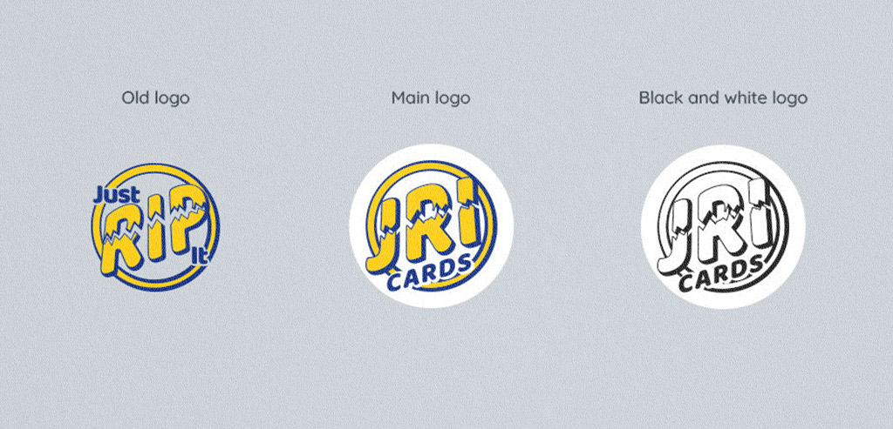
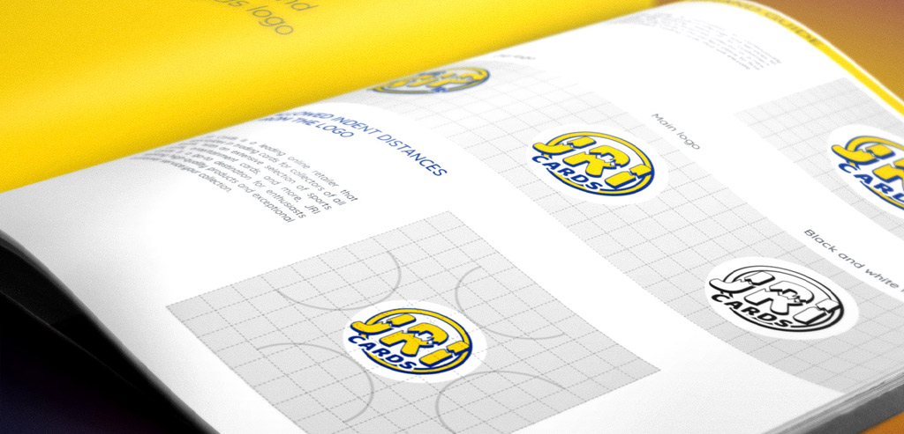

Just Rip It
It was never just a logo project. It grew over years of close work with Charlie, Samuel, and Eugen — from Just Rip It to JRI Cards, from early graphics to a full visual presence across the website, YouTube, live shows, merch, promos, illustrations, and collector-facing materials.
Eight years of collaboration changes the nature of the work. Over time, design stops being a sequence of separate requests and becomes a form of memory. The early shape of the brand stays visible: where it was still searching for balance, where it had to bend, where it could not bend, and what parts of its character had to survive every new format.
JRI Cards began as Just Rip It — a name built around the physical act of opening a pack. It was direct, loud, and closely tied to the energy of card breaking. That part was never invented by design. It was already inside the business.
Unfortunately, some companies become large enough to mistake market power for ownership of language. A simple construction like "Just + verb + it" can suddenly turn into disputed territory, not because language stopped belonging to everyone, but because few growing businesses can afford to spend thousands proving that point in court.
For Just Rip It, that dispute arrived in the form of a legal letter. The name had to change, yet the brand could not become weaker, quieter, or less recognizable. The rebrand began there: less as a cosmetic update than as a way to keep the same energy under a name that could move forward with less risk. That is how Just Rip It became JRI Cards.
The new logo did not try to walk away from the old one. It kept the same basic attitude, circular, energetic, direct, and built around the force of the rip. At first glance, it still felt like the same brand. The change happened inside the existing character, not against it.
That mattered. For a company already known by collectors, viewers, and returning customers, a rebrand could not feel like a restart. It had to preserve the same voice, the same energy, the same visual memory - now under a shorter, more ownable name.
Over the years, the work around JRI Cards kept growing in the same way: not as a set of disconnected graphics, rather as an ongoing visual language shaped through real use. Website updates, YouTube materials, promotional graphics, illustrations, product and collector-facing pieces, event visuals, and everyday design decisions all had to stay connected to the same recognizable core.
The value of the system was not in making every piece look identical. It was in keeping JRI unmistakably itself across formats, campaigns, and years of change.
The visual language found its place between two forces: loud enough for the rip, solid enough for the transaction. After eight years, the work is not only in the logo. It is in continuity - in knowing how the brand speaks when Charlie is live, how it looks when something needs to be clear and functional, how it behaves on a product page, a promo, a cap, a card, or a YouTube thumbnail. This case is not about a single redesign.
It is about staying close enough to a brand to help it change without losing its nerve.


